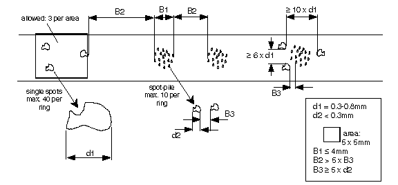

Operating Documentation
Direction 5114043-800, Rev# 9
LightSpeed 3.X Service Methods (Advanced)
Operating Documentation |
Communication failures (TAXI Link Failures) after vacuuming failed.
Cratex sanding is for mechanical damage to the ring ONLY (e.g. pits and arc marks).
Alcohol cleaning should be done as a corrective (repair) action only. Alcohol cleaning is not a PM action and should only be done if necessary, and only AFTER vacuuming the slip ring and gantry has not corrected the problem.
Vacuum ring per PM procedure.
Check baseline.
Remove brush block (the alcohol will contaminate the brushes). Refer to Slipring Brush Block Replacement for the proper removal procedure.
Use specified alcohol (46-183039p1) and allow to AIR DRY for 15 min. DO NOT use the alcohol prep pads found in hospitals. They are often not PURE alcohol, and can contaminate the slip ring and brushes.
Reinstall the removed components. Refer to Slipring Brush Block Replacement. The proper replacement procedure is critical to the life of the slip ring components.
| NOTE: | Only use GE approved alcohol 46-183039P1. |
| Cratex should be used to fix pit and arc marks only. | |
| NOTE: | Smoothing out the track surfaces is a time consuming task and if not done properly and completely will result in either permanent damage or will cause another arc. Do it right the first time. Removing the “clogged” end of the cratex stick with a coarse file will help speed up the process of smoothing out pitted areas. Reference “Inspection Criteria,” Section 4 before proceeding. |
Remove Brush Block Assembly before using Cratex (see Slipring Brush Block Replacement).
Using a Cratex fine abrasive stick (46-297961P2), attempt to smooth out the pitted area or areas with deposits on the slip ring. Do not attempt to clean areas larger than 2 centimeters at one time. ONLY use Cratex on the ring that is in need of repair. If an area is still not smooth, use Cratex medium abrasive stick (46-297961P1). After using the medium, repeat procedure with the fine.
When done with the Cratex sticks, it is very important to remove ALL traces of abrasive with a thorough alcohol cleaning.
Replace the brush block assembly. Refer to Slipring Brush Block Replacement. The proper replacement procedure is critical to the life of the slip ring components.
A normal ring will have a “patina” of brush material on the surface of the brass ring. This patina is about 3 mils thick and is self renewing. This is the natural lubricant and completely normal. Do not attempt to remove this, as future problems will arise and create a cycle of repeating failures on excess dust production.
Micro spots are acceptable provided they do not exceed the following specifications, and their forms contain no burrs and depths no greater than D1, D2. Reference Illustration 1.
Illustration 1: Slipring Inspection Criteria
